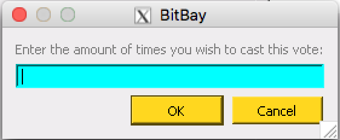

BitBay’s Decentralized Voting UI marks yet another amazing feature of the advanced BitBay Client. The voting works thanks to blockchain technology so votes are 100% transparent and trustworthy.
***Note: The BitBay Markets Client must be downloaded and 100% synchronized to the blockchain. In order to vote, you must be holding coins in the Client wallet, and that wallet must be unlocked with staking enabled (see staking tutorial). Anyone can vote; the more coins you have stored on your Client the stronger your voting power becomes. This is due because all votes attach themselves to staked block rewards (which are received at random intervals based on coin balance).
Step 1:
Within the Client simply go to the Settings tab -> General Settings -> Mining/Staking and Voting (tab).
{kind=link}
Step 2:
Next, click the “Add Vote” button and enter the subject of your vote.
{kind=link}
As an example: If a vote was taking place to answer a “yes/no question”, then the people who vote for “yes” would enter “yes” and those who vote “no” would enter “no”. It is a maximum of 20 characters (lower cases only, it is case sensitive). Everyone must vote using an identical string of characters so that it gets counted.
It helps to make the character string unique, because the burn address that counts the votes is generated based on that string. So the string must be as unique as possible to not have your poll affected by other concurrent open polls of other Bitbay users (in case they do a nearly identical poll with similar vote strings).
An example of a character string would be write “yes” or “no” + other unique characters to differentiate your votes like “yes175feUndw456sefeG” & “no175feUndw456sefeGb”. Also make note of when the voting period begins and ends so that you can later count the votes accurately.

Step 3:
The Client will then ask you how many times you wish to vote. All votes cost 0.000005554 BAY.
Enter the desired amount of votes to cast and you are complete. Remember, your Client must be staking in order to cast votes (see staking tutorial). Votes do not immediately tally into the system. Once you’ve cast the total of votes you wish to add, these votes will attach themselves to any future blocks you find while your Client stakes.
You must keep you Client open and staking in order for it to continue to add votes to your choice.
{kind=link}
Step 4:
You will be able to count the votes applied to each option by clicking on the “Count Vote” option in the same window. Make a note of which block starts and ends in the previously agreed voting duration to see the most accurate count. You can use the blockchain explorer to track everyone’s votes, as all votes are transferred to a burn address on the blockchain.